1、统计思想和技术在工程实践中的关键作用
统计是科学，它可以帮助我们针对变动做出判断和决策。比如，医院急诊科 （ED） 是医院的重要科室，原因就在于在急诊科，患者到达急诊室的过程变化很大，取决于一天中的几小时和一周中的哪一天，以及长期的周期性变化。急诊科的服务过程也是高度可变的，取决于患者需要的服务类型、急诊室的患者人数以及急诊室的人员配备和组织方式。急诊室的容量也有限，因此一些患者需要等待很长时间。患者平均等待多长时间？这对医院来说是一个重要的问题。如果等待时间过长，一些患者会为此离开不接受治疗（LWOT）。这会给患者带来严重的问题，病情可能会恶化，而且可能会引发并发症。因此，另一个重要的问题是：来自ED的LWOT患者比例是多少？可以利用概率模型来解决这个问题，人们可以从这些模型中非常精确地估计等待时间和LWOT的患者数量。建立概率模型需要用到概率、概率分布的相关概念，我们在第2到第5章会做介绍。
学习目标
仔细学习本章之后中可以做到：
-
辨识统计在解决工程问题中的角色。
-
讨论工程中变动如何影响数据收集和决策。
-
解释枚举和分析研究之间的差异。
-
讨论工程师用来收集数据的不同方法。
-
通过比较设计实验与其它数据收集方法，辨识它的优势。
-
解释机理模型和经验模型之间的差异。
-
讨论如何在工程和科学研究中使用概率和概率模型。
1.1、工程方法和统计思想
工程师是这样一类人，他们能高效地利用科学原理解决社会关切的问题，他们改进已有的产品或生产过程，或设计新的产品或生产过程来满足客户的需求。工程方法或科学方法就是确认和解决这些问题的一种方式。它往往包括以下几个步骤：
- 首先清晰简明的描述问题。
- 至少暂时地辨识影响这些问题的重要因素，或辨识在解决这些问题的过程中能起重要作用的因素。
- 利用被研究对象的科学和工程知识提出问题模型。当然要清晰地陈述模型的限制和假设前提。
- 通过一定的控制实验，并从实验中收集测试或验证前面所建立的临时模型和结论的数据。
- 再根据数据修正模型和结论。
- 利用模型去解决问题，提出解决方案。
- 通过适当的实验确认针对该问题所提出的解决方法是否有用且高效。
- 根据该问题的解决方案做出结论，或推荐解决方法。
图1.1、工程方法的主要步骤
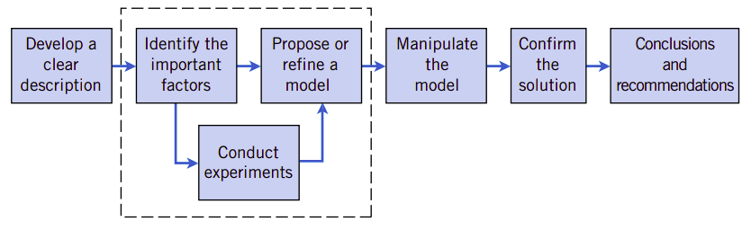
图1.1显示了这8个步骤，并且特别显示了上述第2步骤到第5步骤可能会反复多次，才能最终得到恰当的模型。因此工程师必须掌握规划实验、收集数据、分析和解释数据，并理解数据与他们针对所研究问题所提出的模型之间的关系。
而统计(statistics)就是收集、呈现、分析和应用数据做出决策、解决问题和设计产品及生产过程的方法。简单地说，统计就是数据科学。工程实践往往需要用数据反映世界，因此工程师必须掌握统计学知识。
统计方法常常用于帮助人们描述和理解变动 (variability)。变动指的是对系统或现象的观察结果并不是准确相同的。在日常生活中常常会遇到变动，有了统计思想，我们就能帮助我们在决策过程中处理变动。比如，对于生产稳定的同一批混凝土，通过规范地采样制作试件，我们能保证试件的强度是完全一样的吗？当然不会！事实上有时试件强度的变化还是相对较大的。试件强度的变化还会受到很多因素的影响，其中最关键的因素就是砂石料的粒形、表面特征的影响，水泥强度的波动，制件人之间制件水平的影响、检测仪器设备之间的差异等等。这些影响因素就是潜在的变动源。至少在当前，我们还没有找到一种方法来描述砂石料的粒形和表面特征与混凝土强度之间的关系，也没有找到一种方法来描述硅酸盐的二氧化硅结构变化与水泥强度之间的相关关系，因此这些影响因素总是存在的。我们也没有办法完全消除制件人之间的制件差异，当然也无法完全消除仪器设备之间的差异。因此，变动总是存在的。统计学为我们提供了一种方法来描述这种变动，也为我们提供了研究那些因素才是影响变动的重要因素。
我们考虑混凝土强度值是一个随机变量\(\mathcal{X}\)，通常可以使用以下模型来表达一次对混凝土强度值的测量：
其中\(\mu\)是常数而\(\epsilon\)是随机扰动。每一次测量常数总是相同的，而各种我们无法控制的因素都会改变\(\epsilon\)的值，这样每一次测量都会呈现不同的值，但总会在常数\(\mu\)附近变化。如果没有任何扰动，那么每一次测量都会得到精确的值。但在现实中，扰动总是存在的，因为我们的认知能力是有限的，某些影响我们并未认知到，因而也无法控制，故测量总会呈现常数加扰动的结果。
在工程领域中，常常需要统计思想。比如，在设计混凝土配合比时，我们可能去改变水胶比的大小，查看水胶是否会影响混凝土的强度。比如第一次所用水胶比为0.42，得到一组强度值，改变水胶比为0.38，再得一组强度值，如下表1.1
表1.1不同水胶比的强度值
| 水胶比 | 强度(MPa) | |||||||
|---|---|---|---|---|---|---|---|---|
| 0.42 | 43.8 | 43.2 | 45.0 | 48.4 | 45.8 | 41.2 | 46.1 | 45.3 |
| 0.38 | 52.7 | 50.2 | 51.4 | 49.4 | 50.1 | 49.6 | 53.5 | 51.2 |
从表中可以看到，水胶比为0.42的混凝土强度值的常数值（即公式(1)中的\(\mu\)）大约为45.0，而水胶比为0.38的混凝土强度值的常数值大约为50.0。这似乎给我们一种印象，水胶比的降低会导致混凝土强度的增加。但是在做这种结论之前还需要回答许多明显的问题。比如，另外一个水胶比会给出什么样的结果呢？这两个不同的水胶比所得的混凝土强度值能给我们足以给我们可靠的结论吗？如果我们由这两组数据得出结论，认为水胶比降低会导致混凝土强度值增加并把它用于工程实践中，会有什么样的风险呢？比如，水胶比低的一组强度值的增加可能是由于混凝土的内在原因导致的变化而非水胶比降低造成的吗？
通常情况下，在工程实践中常常可以应用牛顿力学解决具体结构的受力问题，人们习惯于将普遍规律用于特定场合，也就是我们通常所谓的“正逻辑”。但是人类认知世界还有另外的方式，即从已观察到的一组测量结果去推测更普遍的结论，即从样本(sample)去推断总体(population)。比如，在我们知道水胶比降低强度会增加的前提下，我们可以利用这一规律去设计混凝土配合比，我们有意识地选择几个水胶比，只要它能涵盖我们需要的混凝土强度即可。这个规律让我们的选择有的放矢的做出选择。在JGJ55的规范中就利用了这一规律。但是，如果我们并不知道这一规律，我们只有一组一组的数据，只能通过这些数据，我们要去推断混凝土的水胶比——强度规律。从样本到总体的推断过程我们称为统计推断。这种从特定实例推断总体的过程姑且称之为“反逻辑”。
有了反逻辑的思维方法，我们就称为具有了统计思想。
1.2、收集工程数据
统计推断的“反逻辑”认识世界、发现规律的前提是要有充分的数据。因此，要将统计思想用于工程实践、建立模型都离不开数据的收集。
要收集数据，则要明白数据来自何处。目前工程数据主要有三个来源，它们分别是：
- 历史上存留的数据。
- 工程观察获得的数据。
- 设计专门实验获得的数据。
高效的数据收集程序能极大地简化分析，也能改进我们对现实世界的理解。所以有必要讨论数据收集的方法。
为了清晰地介绍数据收集的基本概念，我们先要要介绍一个实例。在这个实例的基础上能加深对概念的理解。
这个实例是参考书第1-2.2中所介绍的，由Montgomery, Peck, and Vining (2006)所描述的丙酮-丁醇蒸馏塔的工程的研究实例。在工程中，馏出液或产品流中丙酮的浓度是重要的变量，我们特别关心它。影响馏出物的因素可能有再沸腾温度、冷凝温度和回流速率。生产人员获得并记录下了如下的内容：
- 每小时采样测试馏出物中丙酮浓度。
- 再沸腾温度记录，这个记录是一张再沸腾温度随时间变化图。
- 冷凝温度控制记录。
- 每小时标称回流速率。
在这个过程中，回流速率应该保持常数，因此生产过程中很少会去改变它。
为了方便叙述，我们称这个实例为“蒸馏实例”。
1.2.1、对历史数据的研究
开普勒的行星三大定律就是来自于第谷二十多年的天文观测数据。当年的第谷有全世界最大直径的天文望远镜，他在好奇心驱使下，潜心观测了二十年。但他不会分析，将这些数据将会给他资助的学生开普勒，开普勒经过对数据的分析，发现了行星运行的三大规律。对于开普勒来说，别人在历史上收集的数据，仍然可以用于分析，并由此发现自然界的运行规律。这是借助历史数据完成数据收集的一个典型范例。
在研究应用历史数据时，可能会用到全部已有的数据，也可能只用其中的一部分，也可能只用到某一时间周期内的数据。历史数据的收集受到那一个时期的局限，可能并不能覆盖我们所研究问题的全部变量。因此有可能数据量很大，但针对我们的研究对象所包含的信息并不多。同时还因为种种原因，发生了记录或转录错误，甚至还会因为保护不当而有所遗失，这些问题都告诉我们只有历史数据往往还不足以支持我们的新研究(开普勒的实例只是一个特例，因为第谷的爱好，数据观察记录保护都十分完好，并且观察也非常专业)。
针对蒸馏实例，只根据历史记录分析，可能会有以下问题：
蒸馏实例要解决的问题
-
因为回流速率在整个历史周期中并没有发生变化，可能看到不到回流速率与丙酮浓度之间的关系。
-
所记录的两种温度数据（几乎是连续记录）与丙酮浓度测量（每小时测定一次）时间并不完全对应。还未找到明确的方法构建它们的近似关系。
-
生产尽可能地维两个湿度到期望的目标温度设定值。因为温度变化很小，很难评估它们对丙酮浓度的影响。
-
冷凝温度和再沸腾温度在很小范围内变化的前提下，冷凝温度倾向于随着再沸腾温度的增加而增加。这种情况下，很难将这两个影响丙酮浓度因素的效果区分开来。
1.2.2、观察研究
对工程的工艺过程或总体的观察应该尽量不要扰动它们，只需要记录我们感兴趣的数量。比如对于混凝土在环境中的腐蚀过程的观察，只需要观察混凝土的结构在环境中的劣化进程，记录它的劣化指标的变化。但在这个过程中，尽量不要去改变该结构所处的小环境，也不要人为地破坏结构，包括少量的钻芯取样也要慎之又慎。
因为常常只能在相对短的时间内做这样的研究，有时变量的变化可能并未被例行的测量所记录到。比如，在软土路基观察中，由于沉降的测量有一个固定的测量周期，因此沉降的突变就可能未在发时间被记录。一时要确定超载加压快速沉降与时间的关系还有不明确的问题。
以上述蒸馏实例来说，观察研究更易解决上述蒸馏实例问题中的问题1和问题2，并且能由此获得很高的精度。但是，对解决问题3和问题4却很难。
1.2.3、设计专门实验
在专门设计实验时，需要有意识有目的地改变系统或过程的可控制变量，并观察系统的输出数据，然后推断确认那一个变量对输出性能变化有重要影响。比如，有意识地改变混凝土配合比的水胶比，观察混凝土的配制强度，以便确认混凝土强度是否主要受到水胶比的控制。在设计实验时，需要依据随机化(randomization)的基本原理，才能最终建立因果(cause-and-effect relation)关系。
我们在工程和物理化学科学中的大部分知识都是通过测试或实验获得的。工程师通常在没有科学或工程理论直接指导，或者没有理论完全适用的所研究的领域工作，因此对结果数据进行实验和观察是解决问题的唯一途径。即使有一个很好的基础科学理论可用，但仍然还是需要通过测试或实验确认该理论在此应用环境和领域确实有效。统计思维和统计方法在规划、实施和分析工程实验数据方面发挥着重要作用。设计实验在工程设计和开发以及制造过程的改进中起着非常重要的作用。
比如，在高铁兴建初期，要保证混凝土的电通率达到设计要求，需要控制混凝土配合比的某些参数。凭直观，我们想到水胶比会影响电通量的大小，于是我们选择水胶比0.5和0.35两个差别比较大的值，在固定其它参数的情况下，分别测定混凝土在28天齡期56天齡期的电通量。这是一种比较实验，可以应用第九章和第十章的假设检验(hypothesis testing)，确定这两种水胶比是否会影响混凝土两个齡期的电通量。在统计学中，假设(hypothesis)就是一种关于要研究的系统中某一问题的陈述。比如混凝土的水胶比是否要极大地影响混凝土的电通量，这是我们所感兴趣的问题。如果我们只使用一个水胶比测定它的电通量，要研究它是否能保证电通量不会超过多少，这是单样本假设检验问题(single-sample hypothesis-testing problem)，在第九章中有介绍。如果要研究水胶比从0.5变化到0.35，电通量是否会有显著下降，这是双样本假设检验问题(two-sample hypothesis-testing problem)，在第十章中有介绍。
设计专门实验是研究复杂系统的强有力方法。以蒸馏实例为例，它有三个影响丙酮浓度的因素——两个温度和回流速率——并且我们希望能观察到这三个因素对丙酮浓度的影响。对这一问题，良好的实验设计要保证能区分这三个因素的影响。在这个实验中针对这三个因素所选定的实验值称为因素水平(factor levels)。典型情况下，我们为每一个因素选择小量的水平数，比如两个。对于蒸馏问题，假定三个因素均使用两个水平值，即“高”和“低”（分别用+1和-1表示）。合理的实验策略是使用这三个因素的水平之间的组合，共计8个(\(2^3\))，这种方法称之为因子实验(factorial experiment)。表1.2展示了蒸馏实例的一种因子实验设计。
表1.2蒸馏实例的因子实验设计
| 再沸腾温度 | 冷凝温度 | 回流速率 |
|---|---|---|
| -1 | -1 | -1 |
| +1 | -1 | -1 |
| -1 | +1 | -1 |
| +1 | +1 | -1 |
| -1 | -1 | +1 |
| +1 | -1 | +1 |
| -1 | +1 | +1 |
| +1 | +1 | +1 |
图1.2、蒸馏实例的三因素部分因子实验设计
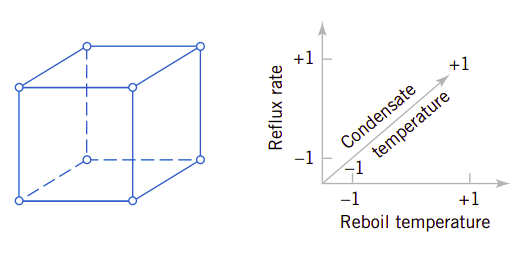
图1.2例示了三因素的因子实验设计所形成的立方体。根据实验设计，将实验所规定的条件用于控制生产并保证生产过程达到稳定状态，再测量回流中的丙酮浓度。根据试验结果可以做出特定的统计推断。利用因子实验方法可以主动地研究系统或工艺过程。
因子实验的一个重要优点在于可以研究因素之间的交互影响。设想蒸馏实例中的两个温度。假定再沸腾温度很低，而不管冷凝温度如何变化，丙酮浓度都很低。这表明在再沸腾温度很低时冷凝温度对结果没有影响。但是，当再沸腾温度很高时，高的冷凝温度获得好的收获，而低的冷凝温度的收获不佳，即在高再沸腾温度高时，冷凝温度会影响最终生产结果。冷凝温度的效果取决于再沸腾温度的高低，在这种情况下，两个因素之间有交互影响。如果不能针对两个温度的不同高低值的组合都测试到，那么有可能不能侦测不到这种交互组合。
图1.3、蒸馏实例的四因素因子实验设计
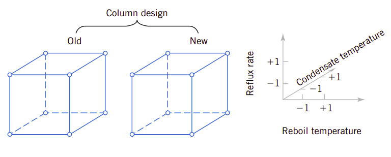
当然我们可以将因子实验扩展到多个因素的实验，比如4个或更多。比如还要考虑标准蒸馏塔与新设计的蒸馏塔之间的对比。其设计如图1.3所示。四因素设计在几何上形成超立方体。这时具体实验的个数为增加，以两水平为例，假设因素有\(k\)个，那么需要实验的次数为\(2^k\)。因此四因素的实验次数为16，五因素则为32，八因素则需要256。很明显，随着因素的增加，实验次数会快速增加，如果水平数再提高，则增加速度更快，以至于时间和资源都不足以支持做这种全组合的实验。
图1.4、蒸馏实例的四因素部分因子实验设计
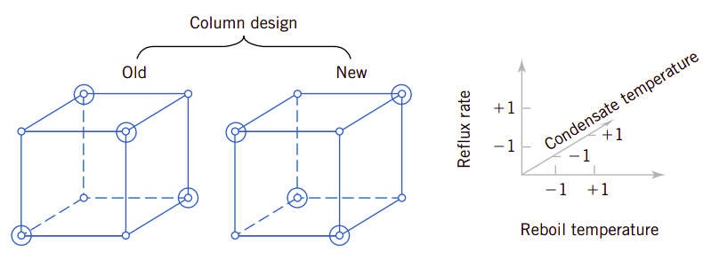
幸运的是并不需要对这些因素的所有水平组合进行实验。只需要所有因子各水平全组合的子集也能达到实验的目的，这称为部分因子实验(fractional factorial experiment)。如图1.4显示了四因素部分因子实验设计的一个实例。
如何从全组合中选择恰当的子集形成实验设计呢？为此人们开发了正交实验设计方法，只需要从全组合中选择某些特定组合进行实验，也能达到因子实验的目的。
实验设计需要专门学习和研究，有兴趣的读者可以阅读：
Benjamin J Winer, Donald R Brown, Kenneth M Michels. Statistical Principles In Experimental Design. 3rd Edition. McGraw-Hill February 1, 1991
1.2.4、过程观察
我们不仅要收集系统或过程在某一个时刻的数据。因为系统或过程会随着时间的变化而变化，并不是一成不变的。将数据随时间的变化绘制成时序图，能便利影响系统或过程的现象更形象地展示出来，并且能更好地判断系统是否达到稳定状态。
图1.5、蒸馏实例的丙酮浓度计点图，不能辨识丙酮浓度的时间稳定性
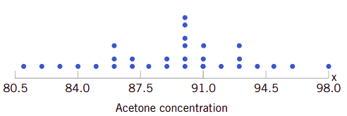
以蒸馏实例来说，如果我们只是将定时测得的数据按浓度值计数绘制点图，如图1.5所示，它并不能提示问题本身。相反地，如果把每一次测量与过程进行的时间联系在一起，绘制成时序图，则能很好地提示丙酮浓度的变化规律。图1.6所示的时序图提示了丙酮浓度的变动特性。即丙酮浓度随着时间的增加会趋于一个稳定值的平均值。
图1.6、丙酮浓度的时序图，比点数能揭示更多信息
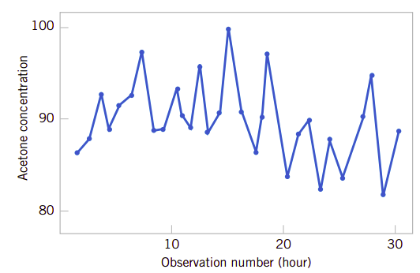
为什么时序图那么重要呢？这牵涉到我们要应用统计技术去控制生产。以蒸馏实例来说，我们定时间周期收集丙酮浓度的数据，其目的仍然是为了控制生产。但如果我们次测量发现系统或过程偏离了设定的目标值，我们是立即调整还是等待一定时间，对更多的数据进行统计后才高速呢？W.Edwards Deming的试验给出了很好的答案。
W.Edwards Deming是非常有影响力的工业统计师，他强调理解过程或系统随着时间变化的变动特性十分重要。它主导了一次著名的试验，在这个试验中它希望能把弹珠尽可能放置到棹面上设定的目标点上。如图1.6所示，他将一个漏斗放置在棹面的环形支架上，并将弹珠放入漏斗中。漏斗尽可能对准目标的中心位置。然后他以两个不同的策略进行试验。第一个是绝不移动漏斗。他只是一个一个地放入弹珠，并记录弹珠下落后与目标点的偏差距离。第二个策略是落下第一个弹珠后记录它与目标的偏差距离。然后依据这个偏差距离调整漏斗的位置以补偿偏差，调整的方法是向偏离的反方向移动相同大小的位置。之后的过程他持续这种补偿调整。
当两种策略的试验完成后，Deming注意到策略2的距离偏差变动值大约是策略1的两倍。对漏斗的调整反面会增加对目标点的偏差。对这一现象的解释就是弹珠落下位置的一次误差并不足以提供下一次实验会发生的偏差信息。其结果就是调整漏斗并不会减少误差，相反它们会趋向于把漏斗移动得更偏离目标位置。
图1.7、Deming的漏斗试验
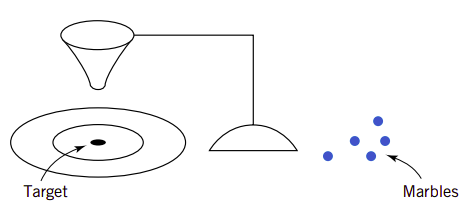
这个有趣的试验向我们指出，基于随机扰动而调整系统会增加系统的变动。我们称这种现象为过度控制(overcontrol)或篡改(tampering)。调整补偿只能针对系统的非随机扰动——只有这样才对系统达到目标值有帮助。计算机仿真也例示了这个试验的过程。图1.8显示的是测量100次的时序图(这个测量值用\(y\)表示)。过程的目标值是10个单位。图中显示了调整和不调整两种试验的数据。图中显示针对随机扰动的调整过度控制系统会增加系统的偏差。
图1.8、将调整应用到扰动过度控制系统并增加了最终的偏差
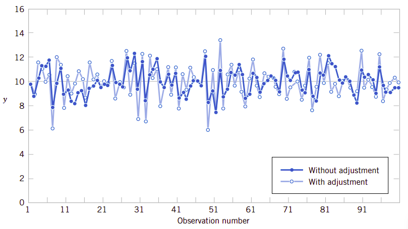
图1.9显示的是图1.8中没有针对扰动的调整试验数据，但试验到达57次弹珠下落后，统计获得系统平均偏差2个单位。针对系统真实的平均偏差做出调整非常有用。图1.9还显示当做出调整(减少两个单位)后的试验数据(观察了57号数据)，调整移动漏斗减少了2个单位(未调整时统计出的偏差2个单位)。请注意这种调整会减少系统偏差。
图1.9、在57号试验时检测到系统的偏差平均值并做出(减少2个单位)的调整，这会减少最终的系统偏差
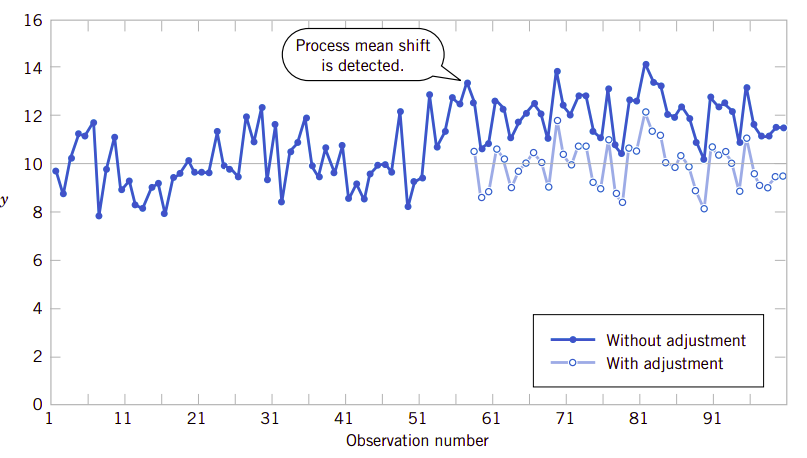
在理解了这种影响过程的变动类型后，人们自然要问题一个问题：何时调整系统、调整量是多少？控制图是非常有价值的方法，它可以检查时序数据的变动。图1.10显示了图1.6所示丙酮浓度的控制图。控制图的中心线(center line)是在蒸馏稳定后前20个样本的测量数据的平均值(\(\overline{x}=91.5\text{g/l}\))。上控制限(upper control limit)和下控制线(lower control limit)是一对统计偏离限，它反映了过程的本质或自然变动的性质。这些线值定位在中心线的3倍标准差上下。如果过程按它应该运行的方式运行，没有任何外来的变动源，寻么浓度测量值只会围绕中心线上下波动，并且它们几乎应该落在控制限以内。
图1.10、蒸馏过程控制图
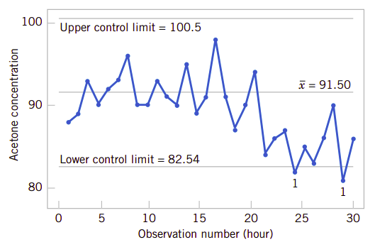
在图1.10中大多数的测量值都落在两个控制限内，但仍然有两个点低于控制低限。这是一个强烈的调整信号，过程需要纠正偏差。如果我们能找到并消除底层的影响原因，我们就能极大地改进系统的性能。
另外，Deming还指出过程数据对于我们针对系统做出各种类型的结论都非常重要。有时我们收集过程数据评估当前的生产。比如，我们可以从晶圆总体中抽取三个样品并测量它们，然后将信息用于评估总体。这称为枚举研究(enumerative study)。但是许多情况下我们会使用当前生产数据去评估将来的生产。我们要将当前的结论用于概念化的、将来的总体。Deming称这种为分析研究(analytic study)。很明显这要求过程是稳定的，并且Deming强调需要使用控制图来判定稳定性的假设。图1.11例示了枚举研究和分析研究。
图1.11、枚举研究和分析研究
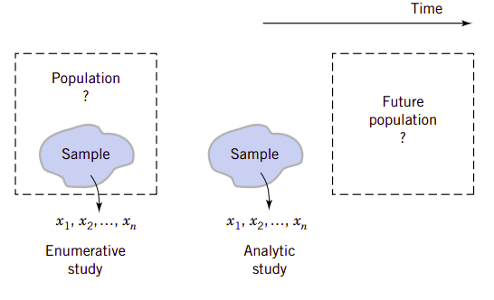
控制图在监控、控制和改进工程过程方面是非常有用的统计工具。利用控制图的统计学分支称为统计过程控制(statistical process control)或SPC。在第15章要讨论统计过程控制。
1.3、机理模型和经验模型
可以说几乎在所有的工程问题中模型都起着极为关键的作用。许多工程师在以前的学习过程中都会学习特定领域的模型，学习利用这些模型解决实际问题的技术。设想一个简单的实例，我们要测量细铜线中的电流强度。电流强度与电压和电阻之间的关键符合\(\Omega\)定律：
因为我们已理解了电流强度、电压和电阻三者之间的物理关系，因此称这种模型为机理模型(mechanistic model)。但是当我们在不同的时间多次执行同样的测试过程，甚至在不同的日子测量，所得的结果都会稍稍有所不同，原因就在于某些因素并不能完全得到控制，比如环境温度的变化、仪器仪表的微小波动、铜线不同位置的小杂质以及电压的微小漂移。那么观察电流强度更为现实的模型应该是：
其中加到模型中的\(\epsilon\)项就是为了处理所观察到的电流强度并不完全符合机理模型的事实。可以认为%\epsilon$项包含了所有影响系统而未能在模型中加以考虑的变动源对观察结果的影响。
工程师常常会面临这样的问题，即没有充分理解和简单的模型可以解释所观察到的现象。比如，我们希望了解聚合物的数均分子量(the number average molecular weight, \(M_n\))。我们希望理解混凝土强度与配合比参数之间的关系。
我们知道，混凝土强度与胶水比有关，也水泥强度有关。因此，我们可以假定混凝土强度与胶水比、水泥强度之间的关系为\(f\):
其中：
- \(f_c\)：混凝土强度
- \(b/w\)：胶水比
- \(f_{ce}\)：水泥强度
在充分研究之前，函数关系\(f\)是未知的。为此可以利用一阶Taylor级数展开这个函数，可以得到：
其中所有的\(\beta\)值都是未知的模型参数。正如前面所介绍的\(\Omega\)定律一样，这个模型并不能完美地解释混凝土强度的现象，因此还需要考虑在模型中加入变动影响项\(\epsilon\)：
这种考虑未控制因素影响结果的模型常常称为经验模型(empirical model)。也就说，它利用了工程师和科学家对某个现象所掌握的知识，但并非利用从第一性理论原理来开发的模型。
根据公式(6)，我们可以选择不同强度的水泥，不同的水胶比，安排不同的试验，可以获得众多的数据，并利用本教材第11章和第12章所介绍的技术获得回归模型(regression model)。利用实验所得数据，应用回归技术，我们可以确定公式(6)中的三个\(\beta\)参数的具体值。由此，我们可以用模型：
其中：
- \(\hat{f_c}\)：混凝土强度估计值或预测值
这是在我们完全不知道混凝土强度与胶水比和水泥强度之间的关系的前提下，可以利用回归技术开发经验模型。为了更多的普遍性，我们并没有利用假设模型(公式(4))的函数。但根据量纲分析，其实我们可以为混凝土强度写出如下的模型：
在公式(8)中，等号两边的单位完全相同。基于这个模型，不用Tylor级数展开函数，仍然可利用实验所得数据和回归技术来确定相应的参数。
量纲分析在解决工程问题的过程中，也起着非常重要的作用，它能帮助我们找到相应的函数关系，或简化相应的函数关系。有兴趣的读者可以进一步阅读有关内容，比如：维基百科的Dimension Ayalysis。从这里出发，可以找到许许多多有关量纲分析的资料。
1.4、概率和概率模型
在第1.1节中我们提到总体中选择的子集可以组成样本，然后基于样本的信息对总体做出相应的判断。这种从样本信息推断总体性质的过程我们就称为统计推断。从一批混凝土中抽出三个试件就可以组成一个样本。为了做出好的决策，必须分析样本如何才能良好地反映总体。如果总体包含有缺陷的产品，样本如何才能很好地检测到它们。我们要如何量化“检测良好”的判据。另外，应该如何从总体中选择样本都能保证我们能做出合理的决策——即保证我们的决策风险处于可以接受的状态。概率模型有助于我们量化统计推断的风险，这种风险是我们每一天的决策风险。
需要更详细地解释才能充分理解概率模型的重要作用。假定半导体工厂的一个生产包含25个晶圆。如果所有的晶圆者是正品或都是次品，那么任何样本都会是正品或次品，都能正确地反映总体的性质。但是，假定只有一个是次品，那么样本可能包含或不包含这个次品。概率模型和一套相关的样本选择方法可以用于量化样本是否能检测到次品的风险。基于这种分析，可以确定是否要增加或减少样本的数量。这里的风险指的是：假定有一系列的总体，它们的次品率相同，我们要分别对这一系列的总体做抽样检测。如何取样要在第二章中介绍。无论如何，假定以同样方式在不同的总体中抽样。样本中包含次品的总体与所有总体的比值就是检测到次品的频率。如果一系列的总体中，其数量趋于无穷大，则这个比值的极限就是样本能检测到次品的概率。
在假定抽样方式合理的前提下概率模型可以用于计算这个比率。幸运的是，我们并不希望从无限系列的总体中抽样，这种类型的问题可以在第2章和第3章中解决。更为重要的是，这一概率基于样本信息为总体信息提供了量化值。
还记得在第1.1节中，我们讨论到总体可能是概念性的，因为在分析研究时可能要将统计推断将当前生产的信息应用到将来的生产。当总体概念以这种方式推展时，统计推断和相关概率模型的作用就显得更为重要了。
以晶圆实例来说，样本中的每一个晶圆都只是分类为次品或正品。对于连续测量来说情况可能不同。以1.2的蒸馏实例来说，生产过程中以固定时间周期测量丙酮的浓度，测量发现的确存在变动。类似于次品晶圆的实例，人们可能希望量化基于样本数据检测过程变动的能力。在生产过程中会设定控制限值来决定是否要调整生产过程。利用浓度测量的概率模型 可以计算检测到特定过程变动的概率。基于合理的数据假设和中心极限定理的结果可以开发出连续测量过程的模型，其中正态分布模型就是特别有价值的统计推断用概率模型。当然假设检验也十分重要。这些类型的概率模型都会在第4章中讨论。其目标仍然是量化从样本数据推断总体性能的风险。
从第6章到第15章，都是关于基于样本的统计推断的技术介绍。连续概率模型，特别是正态分布常常会广泛地应用于量化这种决策的风险，并评估收集数据的方法，评估应该选择多大的样本容量。
重要概念
- 分析研究(Analytic study)
- 枚举研究(Enumerative study)
- 因果关系(Cause and effect)
- 工程方法(Engineering method)
- 控制(control)
- 变动(Variability)
- 解决问题的方法(Problem-solving method)
- 统计思想(Statistical thinking)
- 历史数据研究(Retrospective study)
- 观察研究(Observational study)
- 设计实验(Designed experiment)
- 时间序列(Time series)
- 过度控制(Overcontrol)
- 篡改(Tampering)
- 因子实验(Factorial experiment)
- 部分因子实验(Fractional factorial experiment)
- 交互作用(Interaction)
- 假设检验(Hypothesis testing)
- 总体(Population)
- 样本(Sample)
- 统计推断(Statistical inference)
- 统计过程(Statistical process)
- 机理模型(Mechanistic model)
- 经验模型(Empirical model)
- 随机化(Randomization)
- 概率模型(Probability model)